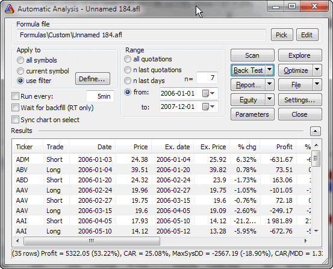

Automatic analysis window

Automatic analysis window enables you to check your quotations against defined
buy/sell rules. AmiBroker can produce a report telling you if buy/sell signals
occurred on a given symbol in the specified period of time. It can also simulate
trading, giving you an idea about the performance of your system.
In the upper part of the window you can see the path to the formula used along
with Pick and Edit buttons.
Pick button opens a file dialog that allows you to choose
the formula you want to use for the analysis.
Edit button opens the AFL Formula
Editor that allows you to edit currently selected formula.
If you want to create a new formula, just open Formula
Editor directly from Tools->Formula
Editor menu, type the formula and press Analysis button in the Formula Editor
toolbar.
In the formula editor you need to write the code that specifies either scan/exploration you
want to run or a trading system you want to backtest. You can find the description
of this language in AFL
Reference Guide.
In order to make things work, you should write two assignment statements (one
for the buy rule, the second for the sell rule), for example:
buy = cross( macd(), 0 );
sell = cross( 0, macd() );
Below these fields there are several controls for setting:
- To which symbol(s) analysis should be applied.
You can select here all symbols, only currently selected symbol (selected
in Select window) or custom filter settings.
- Time range of analysis
Analysis can be applied to all available quotations or only to a defined
number of most recent quotations (or days) or to a date range (From/To)
In the lower part of the analysis window you can see 4 buttons:
- Scan
This starts the signal scan mode - AmiBroker will search through defined range
of symbols and quotations for buy/sell signals defined by your trading rules. If
one of the buy/sell conditions is fulfilled, AmiBroker will display a line
describing when and on which symbol the signal has occurred. Next AmiBroker
proceeds to the end of the range so multiple signals on a single symbol may be
generated.
- Explore
This starts an exploration mode when AmiBroker scans through the database to find
symbols that match user-defined filter. The user can define output columns
that show any kind of information required. For more information please check
out "Tutorial: How to create your own exploration"
- Backtest
This starts the backtesting mode - AmiBroker will search through defined
range of symbols and quotations for a BUY signal defined by your buy rule. If
the buy rule is fulfilled, AmiBroker will "buy" currently analyzed
shares. Next, it will search for a SELL signal. Then, if the sell rule is fulfilled,
AmiBroker will "sell" previously bought symbols. At the same time
it will display the information about this trading in the list view. After
performing the simulation, the summary will be displayed. Read
more in "Tutorial: How to backtest your trading system"...
The backtesting parameters could be changed using Settings
window.
- Settings - allows you to change backtester
settings
- Optimize - allows you to optimize your trading system. Read
more in the "Tutorial: How to optimize your trading system"...
- Check - This option allows you to check if your formula references future
quotes. AmiBroker analyzes your formula and detects if it uses quotes past
the current bar. Please note that formulas referencing the future can give unrealistic
backtesting results that cannot be reproduced in real trading, therefore
you should avoid systems that reference the future.
- Report
This displays the Report window that allows you to
watch, print, and save test results
- Equity
- available only after backtesting - displays the Equity curve for the currently selected
symbol in a new chart pane. Check out "AFL: Equity
chart and function".
- Export - allows you to export the results to a CSV (comma-separated values)
file.
- Close
This closes the analysis window.
Moreover, you have two options "Load" and "Save" for loading
and saving your trading rules from/to files.
Enlarging results view in Automatic analysis window
There is a small arrow button next to the "Result list" horizontal
divider line. This button is provided to enlarge/shrink the result list. When
you are editing your formula it is good to have the edit view larger, but to see
the backtesting results it is convenient to enlarge the result list. In that
case just click on that button and the result list will be enlarged (and the
edit field will get shrunk). To do the reverse just click the button again.